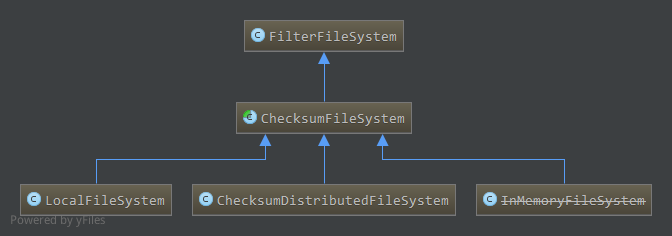
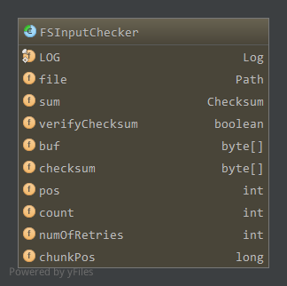

Hadoop版本:Hadoop-1.2.1
ChecksumFilesystem继承自FilterFileSystem，FilterInputStream和FilterInputStream类似，在提供的底层文件系统上增加了新的功能，底层文件系统在构造时由传入的参数初始化，所有的方法直接依赖于底层文件系统中的实现。这里不再分析源码。
ChecksumFileSystem继承自FilterFileSystem，在底层文件系统的基础上增加了校验和的功能。写输入数据时会以块为单位计算数据的校验和，校验和保存在校验文件中，而读取数据时会从校验文件中读取相应块的校验和，重新计算源数据块的校验和并与从校验文件中读取到的校验和比较验证。
ChecksumFileSystem本身还是一个抽象类，类图如下:

1. 成员，构造
本类(不包括父类)拥有的成员如下1
2
3
4
5
6
7
8
9private static final byte[] CHECKSUM_VERSION = new byte[] {'c', 'r', 'c', 0};
private int bytesPerChecksum = 512;
private boolean verifyChecksum = true;
final private static PathFilter DEFAULT_FILTER = new PathFilter() {
public boolean accept(Path file) {
return !isChecksumFile(file);
}
};
校验和文件中开始8个字节的格式为:
CHECKSUM_VERSION+bytesPerChecksum
当前校验和版本对应为”crc0”，bytesPerChecksum为源数据一个块的大小，计算校验和时以块为单位，一个块数据update到Checksum对象中，得到的校验和值为4个字节，即bytePerChecksum(512)个字节的源数据生成的校验和为4个字节。bytesPerChecksum可以通过以下方式设置:1
2
3
4
5
6public void setConf(Configuration conf) {
super.setConf(conf);
if (conf != null) {
bytesPerChecksum = conf.getInt("io.bytes.per.checksum", 512);
}
}即配置项
io.bytes.per.checksum，然后在setConf中读取。verifyChecksum，在读取数据时决定是否验证校验和，可通过以下方法设置:1
public void setVerifyChecksum(boolean verifyChecksum) { this.verifyChecksum = verifyChecksum; }
DEFAULT_FILTER，为listStatus中使用的默认路径过滤器，如上，只接受源文件，isChecksumFile如下:1
2
3
4public static boolean isChecksumFile(Path file) {
String name = file.getName();
return name.startsWith(".") && name.endsWith(".crc");
}源数据的校验和保存的校验文件为”.srcName.crc”，其中srcName为源文件名。因此如果file以”.”开始以”.crc”结束则为校验文件。
构造:1
public ChecksumFileSystem(FileSystem fs) { super(fs); }
直接调用父类FilterFileSystem的构造方法，底层文件系统fs。
2. 输出流ChecksumFSOutputSummer
ChecksumFileSystem实现的输出流为ChecksumFSOutputSummer，而ChecksumFSOutputSummer又继承自FSOutputSummer。1
private static class ChecksumFSOutputSummer extends FSOutputSummer
2.1 FSOutputSummer
FSOutputSummer作为一个在写数据到底层流之前生成校验和的通用类，是一个抽象类
2.1.1 成员，构造
成员如下:1
2
3
4private Checksum sum;
private byte buf[];
private byte checksum[];
private int count;
sum，使用的校验和对象，校验和对象通过update更新数据到内部缓冲，通过getValue计算当前内部缓冲数据的校验和，reset重置内部缓冲重新接收数据计算校验和buf,保存一个源数据块的缓冲，大小为bytesPerChecksumchecksum，保存一个校验和的缓冲，大小为4count，buf中合法数据的数目，当等于buf.length时，计算校验和输出，然后重置缓冲
构造:1
2
3
4
5
6protected FSOutputSummer(Checksum sum, int maxChunkSize, int checksumSize) {
this.sum = sum;
this.buf = new byte[maxChunkSize];
this.checksum = new byte[checksumSize];
this.count = 0;
}
2.1.2 写一个字节write
1 | public synchronized void write(int b) throws IOException { |
如上，源数据缓存在buf中，同时更新到校验和对象中。当buf满，即我们缓存了一个块的数据，通过flushBuffer将源数据刷新到底层流，计算校验和对象中缓存数据的校验和，并刷新到对应校验和输出流中。1
2
3
4
5
6
7
8
9
10
11
12
13protected synchronized void flushBuffer() throws IOException {
flushBuffer(false);
}
protected synchronized void flushBuffer(boolean keep) throws IOException {
if (count != 0) {
int chunkLen = count;
count = 0;
writeChecksumChunk(buf, 0, chunkLen, keep);
if (keep) {
count = chunkLen;
}
}
}
如上，keep参数表示源数据和校验数据到底层流的同时不重置缓冲buf和校验和对象缓存的数据，默认为false，重置。1
2
3
4
5
6
7
8private void writeChecksumChunk(byte b[], int off, int len, boolean keep)throws IOException {
int tempChecksum = (int)sum.getValue();
if (!keep) {
sum.reset();
}
int2byte(tempChecksum, checksum);
writeChunk(b, off, len, checksum);
}
如上，从校验和对象sum中通过getValue计算当前缓存的校验和，然后通过int2byte转换成字节数组存储在成员checksum字节数组中，最终通过writeChunk写出一个块的数据，即将buf中缓存的源数据和checksum缓存的校验和数据写到相应的流中。如果keep为false即重置，通过sum.reset重置校验和缓存的数据。1
protected abstract void writeChunk(byte[] b, int offset, int len, byte[] checksum) throws IOException;
writeChunk本类中为抽象方法，其功能为将字节数组b中从偏移量offset开始处长度为len的源数据以及checksum字节数组中的校验数据写到相应的流中，子类应该具体实现，实现见后面ChecksumFSOutputSummer的分析。
2.1.3 写指定长度write
1 | public synchronized void write(byte b[], int off, int len) throws IOException { |
通过write1循环写，直到写完指定长度len的数据1
2
3
4
5
6
7
8
9
10
11
12
13
14
15
16
17
18
19
20private int write1(byte b[], int off, int len) throws IOException {
//buf缓冲中没有数据，且要写的长度大于buf的长度，直接更新校验和对象，写数据和校验和到相应流中，免去了写到buf缓冲的拷贝(没必要)
if(count==0 && len>=buf.length) {
final int length = buf.length;
sum.update(b, off, length);//更新一整块数据到校验和对象
writeChecksumChunk(b, off, length, false);//计算校验和对象中现有数据校验和，写数据和校验和到相应流
return length;
}
//buf缓冲中还有数据，填充buf缓冲，如果满，写出数据和校验和
int bytesToCopy = buf.length-count;//buf中剩余空间
bytesToCopy = (len<bytesToCopy) ? len : bytesToCopy;//可以缓冲的数据
sum.update(b, off, bytesToCopy);
System.arraycopy(b, off, buf, count, bytesToCopy);//b中数据拷贝到buf缓冲中
count += bytesToCopy;
if (count == buf.length) {//buf缓冲满，刷新到流
flushBuffer();
}
return bytesToCopy;
}
如上，如果目前buf缓冲中没有数据，且要写的数据大于buf的长度(一个块数据)，则我们直接将整块的数据更新到校验和对象sum中，然后写出数据和校验和，从而免去拷贝这一整块数据到buf中(一整块数据拷贝到buf中肯定马上要flush)。否则拷贝b中数据到buf中，如果buf满，则flush，就像2.1.2节介绍的一样。
writeChecksumChunk和flushBuffer见上2.1.2。
其他的辅助类方法比较简单不再分析。
2.2 成员，构造
成员如下1
2
3private FSDataOutputStream datas;
private FSDataOutputStream sums;
private static final float CHKSUM_AS_FRACTION = 0.01f;
datas，底层文件系统中源文件对应的输出流sums，底层文件系统中校验文件对应的输出流CHKSUM_AS_FRACTION，校验文件占源文件大小大致比例(4/512)
构造1
2
3
4
5
6
7
8
9
10
11
12
13
14
15public ChecksumFSOutputSummer(ChecksumFileSystem fs, Path file, boolean overwrite,
short replication, long blockSize, Configuration conf) throws IOException {
this(fs, file, overwrite, conf.getInt("io.file.buffer.size", 4096), replication, blockSize, null);
}
public ChecksumFSOutputSummer(ChecksumFileSystem fs, Path file, boolean overwrite,int bufferSize,
short replication, long blockSize, Progressable progress) throws IOException {
super(new PureJavaCrc32(), fs.getBytesPerSum(), 4);
int bytesPerSum = fs.getBytesPerSum();
this.datas = fs.getRawFileSystem().create(file, overwrite, bufferSize, replication, blockSize, progress);
int sumBufferSize = fs.getSumBufferSize(bytesPerSum, bufferSize);
this.sums = fs.getRawFileSystem().create(fs.getChecksumFile(file), true, sumBufferSize, replication, blockSize);
sums.write(CHECKSUM_VERSION, 0, CHECKSUM_VERSION.length);
sums.writeInt(bytesPerSum);
}
如上，调用父类FSOutputSummer的构造方法，指定的校验和对象为PureJavaCrc32，FSOutputSummer的buf大小为bytesPerChecksum(默认512)，checksum大小为4。datas初始化为底层文件系统通过create打开的源文件对应的输出流。sums初始化为底层文件系统通过create打开的源文件对应校验文件的输出流。源文件对应的校验文件通过getChecksumFile获得1
public Path getChecksumFile(Path file) { return new Path(file.getParent(), "." + file.getName() + ".crc"); }
若源文件名为”srcName”，则校验文件名为”.srcName.crc”。
校验文件流创建后，先写4个字节的版本”crc0”以及4个字节的bytesPerChecksum(默认512)。
2.3 写数据
ChecksumFSOutputSummer的单个字节或多个字节的写方法直接继承自FSOutputSummer中对应的方法，具体见上2.1.2节和2.1.3节。
2.4 close
1 | public void close() throws IOException { |
flush出在buf中剩余的未满足一个块大小的数据，计算校验和并刷新。关闭源文件流和校验文件流。
2.5 Syncable相关
ChecksumFSOutputSummer没有实现Syncable接口，因此在封装成文件系统统一输出流FSDataOutputStream时，sync方法将使用底层流的flush方法。具体见Hadoop抽象文件系统中的输出流部分。
3. 输入流ChecksumFSInputChecker
ChecksumFileSystem的输入流为ChecksumFSInputChecker，继承自FSInputChecker。当通过该输入流读取数据时，会先读取一整块数据到输入流的内部缓冲中，根据需要对该块数据校验和进行验证，然后从内部缓冲中读取数据。1
private static class ChecksumFSInputChecker extends FSInputChecker
3.1 FSInputChecker
FSInputChecker作为一个在读取数据前验证校验和的通用类，是一个抽象类，继承自FSInputStream，即实现了Seekable和PositionedReadable接口1
abstract public class FSInputChecker extends FSInputStream
3.1.1 成员，构造
成员属性如下:

file，对应该流在文件系统中的文件sum，使用的校验和对象，PureJavaCrc32类，通过update更新数据到sum中，getValue计算当前缓冲数据校验和，reset重置内部缓冲数据verifyChecksum，是否在读取数据时验证校验和buf，缓存源数据的字节数组，大小为一个块的大小bytesPerChecksum，默认512字节，缓冲满时刷新到底层流checksum，源数据缓冲计算的校验和，大小为4个字节pos，buf中当前读取到的位置count，buf中最大有效数据位置numOfRetries，读数据失败时，可能切换到其他备份的源，最大重试次数chunkPos，下一块在文件中开始位置，也就是当前在buf中的块的结束位置
这里注意的是，读数据一般是从buf中读取的，若buf中没有数据需要从底层流中读取一个块的数据到buf中，读完一个快对这个块进行验证。count便记录了当前缓冲中最大有效数据的位置，一般来说为一个块的大小，可能到达文件最后剩余数据不足一个块则为不同的值。pos则记录了当前在buf中读取到的位置。
构造:1
2
3
4protected FSInputChecker( Path file, int numOfRetries) {
this.file = file;
this.numOfRetries = numOfRetries;
}
如上，通过这种方式构造时一般会后续通过set方法设置其他成员的值1
2
3
4
5
6
7
8final protected synchronized void set(boolean verifyChecksum, Checksum sum, int maxChunkSize, int checksumSize ) {
this.verifyChecksum = verifyChecksum;
this.sum = sum;
this.buf = new byte[maxChunkSize];
this.checksum = new byte[checksumSize];
this.count = 0;
this.pos = 0;
}
而另外一个构造方法则结合了这两个方法1
2
3
4protected FSInputChecker( Path file, int numOfRetries, boolean verifyChecksum, Checksum sum, int chunkSize, int checksumSize ) {
this(file, numOfRetries);
set(verifyChecksum, sum, chunkSize, checksumSize);
}
3.1.2 读取一个字节
1 | public synchronized int read() throws IOException { |
如上，如果buf中没有剩余数据，通过fill从底层流中读取一块数据到buf中，然后从buf中读取一个字节1
2
3
4
5
6
7
8
9
10
11
12
13
14
15
16
17
18
19
20
21
22
23
24
25
26
27
28
29
30
31
32
33
34
35
36
37
38
39private void fill() throws IOException {
assert(pos>=count);
count = readChecksumChunk(buf, 0, buf.length);
}
private int readChecksumChunk(byte b[], int off, int len) throws IOException {
count = pos = 0;
int read = 0;
boolean retry = true;
int retriesLeft = numOfRetries;
do {
retriesLeft--;
try {
//读取块开始位置chunkPos的下一块长度为len的数据，源数据读取到字节数组b，偏移量offset处，校验数据读取到checksum中
read = readChunk(chunkPos, b, off, len, checksum);
if( read > 0 ) {
if( needChecksum() ) {//如果需要验证校验和
sum.update(b, off, read);//读取的源数据更新到校验和对象中
verifySum(chunkPos);//计算校验和对象中数据的校验和并与checksum验证，原校验和和新计算的校验和不相等抛出异常
}
chunkPos += read;
}
retry = false;
} catch (ChecksumException ce) {
//重试次数达到限制，抛出异常，读取失败
if (retriesLeft == 0) {
throw ce;
}
//可以重试，尝试定位到新的源
if (seekToNewSource(chunkPos)) {
seek(chunkPos);//定位到源的指定位置
} else {
//没有其他源可用，读取失败
throw ce;
}
}
} while (retry);
return read;
}
如上，通过readChunk读取块开始位置为chunkPos的下一块长度为len的数据，源数据读取到b的偏移量offset处，校验数据读取到checksum中。如果读取成功，根据是否要验证校验和进行校验和的重新计算以及验证。读取失败时，如果达到失败重试次数限制，抛出异常，读取失败，还未达到限制则重新定位到其他源，定位成功则使用新的源重新读取，否则没有可用源则抛出异常，读取失败。
读取一块源数据以及对应的校验数据通过readChunk完成1
abstract protected int readChunk(long pos, byte[] buf, int offset, int len, byte[] checksum) throws IOException;
该类中为抽象方法，具体见ChecksumFSInputChecker的实现。
读取成功时，会判断是否要验证校验和，通过needChecksum1
protected synchronized boolean needChecksum() { return verifyChecksum && sum != null; }
当需要验证时，将读取到的源数据更新到校验和对象中，然后通过verifySum验证读取到的校验和和重新计算的校验和是否正确1
2
3
4
5
6
7
8
9
10
11
12
13
14
15
16private void verifySum(long errPos) throws ChecksumException {
long crc = getChecksum();//获取从校验文件读取到的校验和
long sumValue = sum.getValue();//计算读取到源数据的校验和
sum.reset();//重置校验和对象中数据
if (crc != sumValue) {//校验文件中校验和和读取到数据重新计算的校验和不相等抛出异常
throw new ChecksumException( "Checksum error: "+file+" at "+errPos, errPos);
}
}
private long getChecksum() { return checksum2long(checksum); }
static public long checksum2long(byte[] checksum) {
long crc = 0L;
for(int i=0; i<checksum.length; i++) {
crc |= (0xffL&(long)checksum[i])<<((checksum.length-i-1)*8);
}
return crc;
}
如上，在此之前从校验文件读取到的校验和保存在checksum成员中，而对应的数据更新到了校验和对象sum中，分别取校验文件中校验和，读取到数据重新计算的校验和，两者进行比较若不等则源数据或校验数据出现错误，抛出异常。
3.1.3 读取多个字节
1 | public synchronized int read(byte[] b, int off, int len) throws IOException { |
与输出流类似，通过read1循环读取。1
2
3
4
5
6
7
8
9
10
11
12
13
14
15
16
17
18
19
20
21
22private int read1(byte b[], int off, int len) throws IOException {
int avail = count-pos;
if( avail <= 0 ) {
if(len>=buf.length) {//没有可读数据且要读取的长度大于buf的长度，直接从底层流读取一个块数据到b中
int nread = readChecksumChunk(b, off, len);//直接读取到b中
return nread;
} else {//没有可读数据且要读取的长度小于buf的长度，先读取到内部缓冲中
fill();//读取到内部缓冲
if( count <= 0 ) {
return -1;
} else {
avail = count;
}
}
}
//内部缓冲buf有可读数据
int cnt = (avail < len) ? avail : len;//缓冲区可读取长度
System.arraycopy(buf, pos, b, off, cnt);//从缓冲区中拷贝数据到b中
pos += cnt;
return cnt;
}
如上，类似输出流的处理过程。当buf没有可读数据时，如果要读取的长度大于buf的长度，直接从底层流中读取数据到b中，避免了一次拷贝。而如果要读取的长度小于buf的长度时，先读取一整块数据到buf中，然后从buf中读取len长度的数据给b。
3.1.4 Seekable实现
首先是seek的实现1
2
3
4
5
6
7
8
9
10
11
12
13
14
15
16
17
18
19
20
21
22
23
24
25
26
27
28
29public synchronized void seek(long pos) throws IOException {
if(pos<0 ) {
return;
}
long start = chunkPos - this.count;
if( pos>=start && pos<chunkPos) {//pos在buf中，直接改变pos的位置即可
this.pos = (int)(pos-start);
return;
}
resetState();//重置buf和sum
//改变下一次从底层流中读取数据的开始块位置
chunkPos = getChunkPosition(pos);
int delta = (int)(pos - chunkPos);//pos在块中偏移量
if( delta > 0) {
readFully(this, new byte[delta], 0, delta);
}
}
private void resetState() {
count = 0;
pos = 0;
if (sum != null) {
sum.reset();
}
}
abstract protected long getChunkPosition(long pos);
如上，如果pos正好处于buf中，直接改变成员pos值即可。否则buf中数据无效了，重置buf和sum，然后获取pos所属块的开始位置，并设为chunkPos即下次从底层流中读取数据的开始位置，然后通过readFully读取pos在块偏移量大小的数据到临时缓冲中(即读取丢弃，会将pos所属块数据读取到buf中，然后buf的pos置为在块中的偏移量)。这里getChunkPosition返回pos所属块在文件中的偏移量，为抽象方法，见后面实现。1
2
3
4
5
6
7
8
9
10
11protected static int readFully(InputStream stm, byte[] buf, int offset, int len) throws IOException {
int n = 0;
for (;;) {
int nread = stm.read(buf, offset + n, len - n);
if (nread <= 0)
return (n == 0) ? nread : n;
n += nread;
if (n >= len)
return n;
}
}
通过调用3.1.3节的read方法循环读取，直到读完指定长度的数据或达到流末尾。
然后看getPosition的实现1
public synchronized long getPos() throws IOException { return chunkPos-Math.max(0L, count - pos); }
与BufferedInputStream类似，chunkPos保存的是下一次从底层流中开始读取数据时，在文件的偏移量，而我们当前读取到的位置是在buf中的pos处，因此需要用chunkPos减去buf中剩余数据量。
seekToNewSource这里没有实现，还是FSInputStream中的抽象方法，具体实现在子类ChecksumFSInputChecker中，见后面分析。
3.1.5 PositionedReadable实现
PositionedReadable接口的相应方法还是继承自FSInputStream，即依赖于seek方法，先保存当前位置，然后seek到指定位置，通过3.1.3节的多字节读取方法读取或循环读取数据(对应read和readFully)，读取完后通过seek再定位回先前保存的位置。
3.1.6 其他方法
1 | public synchronized int available() throws IOException { return Math.max(0, count - pos); } |
返回缓冲中的可用数据。1
2
3
4
5
6
7public synchronized long skip(long n) throws IOException {
if (n <= 0) {
return 0;
}
seek(getPos()+n);
return n;
}
skip直接通过seek实现，markSupported方法返回false1
final public boolean markSupported() { return false; }
不支持mark和reset的，相应的方法1
2
3
4
5final public void mark(int readlimit) {}
final public void reset() throws IOException {
throw new IOException("mark/reset not supported");
}
因此skip方法没有BufferedInputStream里面对应的拷贝操作。跳过后如果位置在buf中直接改变buf的pos即可，否则改变ChunkPos，读取一块数据到buf中，改变buf的pos。
这里可以对比BufferedInputStream和BufferedFSInputStream(相关实现还有疑问)中的实现。
3.2 成员，构造
成员如下:1
2
3
4
5
6private ChecksumFileSystem fs;//对应的文件系统
private FSDataInputStream datas;//源数据文件在文件系统中的输入流
private FSDataInputStream sums;//校验文件在文件系统中的输入流
private static final int HEADER_LENGTH = 8;//头长度8字节
private int bytesPerSum = 1;//源数据块大小
private long fileLen = -1L;//文件长度
构造:1
2
3
4
5
6
7
8
9
10
11
12
13
14
15
16
17
18
19
20
21
22
23
24
25
26
27public ChecksumFSInputChecker(ChecksumFileSystem fs, Path file) throws IOException {
this(fs, file, fs.getConf().getInt("io.file.buffer.size", 4096));
}
public ChecksumFSInputChecker(ChecksumFileSystem fs, Path file, int bufferSize) throws IOException {
super(file, fs.getFileStatus(file).getReplication() );
this.datas = fs.getRawFileSystem().open(file, bufferSize);
this.fs = fs;
Path sumFile = fs.getChecksumFile(file);
try {
int sumBufferSize = fs.getSumBufferSize(fs.getBytesPerSum(), bufferSize);
sums = fs.getRawFileSystem().open(sumFile, sumBufferSize);
byte[] version = new byte[CHECKSUM_VERSION.length];
sums.readFully(version);
if (!Arrays.equals(version, CHECKSUM_VERSION))
throw new IOException("Not a checksum file: "+sumFile);
this.bytesPerSum = sums.readInt();
set(fs.verifyChecksum, new PureJavaCrc32(), bytesPerSum, 4);
} catch (FileNotFoundException e) { // quietly ignore
set(fs.verifyChecksum, null, 1, 0);
} catch (IOException e) { // loudly ignore
LOG.warn("Problem opening checksum file: "+ file +
". Ignoring exception: " +
StringUtils.stringifyException(e));
set(fs.verifyChecksum, null, 1, 0);
}
}
如上，调用父类FSInputChecker的构造函数，设置文件和对应读取失败时重试次数numOfRetries，numOfRetries为文件的备份数。
datas初始化为底层文件系统open方法打开文件获得的输入流。
通过文件获取校验文件名，然后同样的初始化sums为底层文件系统open校验文件得到的输入流。
初始化sums之后从校验文件中读取4个字节的版本，与当前版本比较，若不等抛出异常。否则继续读取4个字节的bytesPerChecksum初始化成员bytesPerSum。
最后通过父类的set方法设置父类的其他成员，其中读取数据时是否校验依赖于底层文件系统的verifyChecksum成员，在ChecksumFileSystem中默认为true。使用的校验和对象为PureJavaCrc，源数据块大小为刚才从校验文件头读取到的bytesPerSum，校验和为4个字节。
3.3 父类FSInputChecker抽象方法实现
在3.1中分析知，FSInputChecker中的getChunkPosition，readChunk以及PositionedReadable接口的方法等都是抽象类，需要子类实现。
3.3.1 getChunkPosition
getChunkPosition方法返回指定位置对应块在文件中的开始偏移量，如下1
2
3protected long getChunkPosition( long dataPos ) {
return dataPos/bytesPerSum*bytesPerSum;
}
一个块大小为bytesPerSum，因此对应块的开始位置如上。
3.3.2 readChunk
readChunk从指定源文件位置开始读取指定长度的数据，源数据读取到一个字节数组的指定偏移量处，该位置对应的校验数据读取到另一个字节数组中，如下，pos为源文件中的位置，一般为块开始位置，从该位置读取len长度的数据(一般为一块)到buf的偏移量offset处，而在文件pos处的源数据所属块的校验和读取到checksum中(根据需要)1
2
3
4
5
6
7
8
9
10
11
12
13
14
15
16
17
18
19
20
21
22
23
24
25
26
27@Override
protected int readChunk(long pos, byte[] buf, int offset, int len,
byte[] checksum) throws IOException {
boolean eof = false;
if(needChecksum()) {//需要读取校验和，则读取校验和到checksum中，该方法为父类方法，在需要验证校验和且校验和对象存在时为true
try {
long checksumPos = getChecksumFilePos(pos);//获取pos位置所属块的校验和在校验和文件的位置
//校验和文件输入流的位置不是要读取的位置，seek到读取的位置，这里注意seek为底层文件系统对应的流的seek方法，如对于RawLocalFileSystem为文件输入流的seek方法
//即ChecksumFileSystem的seek方法设置完chunkPos后最终真正定位seek的是底层文件系统输入流的seek方法
if(checksumPos != sums.getPos()) {
sums.seek(checksumPos);
}
sums.readFully(checksum);//读取4个字节
} catch (EOFException e) {
eof = true;
}
len = bytesPerSum;//如果读取了校验和，则接下来的源数据会读取整个块
}
if(pos != datas.getPos()) {//源文件输入流位置不是要读取的位置，定位到要读取的位置
datas.seek(pos);//如上，最终定位的是底层文件系统的输入流的定位方法
}
int nread = readFully(datas, buf, offset, len);//从datas中读取len长度的数据到buf的offset处
if( eof && nread > 0) {
throw new ChecksumException("Checksum error: "+file+" at "+pos, pos);
}
return nread;
}
如上，如果需要验证校验和且校验和对象存在，则需要根据pos计算所属区块的校验和在校验和文件的位置，然后读取4个字节的校验和，通过源文件位置获取所属块在校验文件位置的方法如下:1
2
3private long getChecksumFilePos( long dataPos ) {
return HEADER_LENGTH + 4*(dataPos/bytesPerSum);
}
如果读取了校验和，则接下来一定会读取整块的数据，不然验证校验和不对。然后从源文件输入流中读取指定长度的数据到字节数组中。
另外，不管从校验和文件输入流还是源文件输入流，如果当前流位置不是要读取的位置，则会使用流的seek方法定位到指定位置。这也是在父类seek方法中，要定位的位置不在buf缓冲内时改变chunkPos可以达到效果的原因，在下一次读取数据时会定位到指定位置。
3.3.3 PositionedReadable接口
1 | public int read(long position, byte[] b, int off, int len) throws IOException { |
如上，重新创建一个新的临时ChecksumFSInputChecker输入流对象，然后定位到position位置，读取数据后关闭该输入流对象，从而不影响当前输入流对象。
该实现覆盖了父类FSInputChecker继承FSInputStream的默认的read实现，即利用seek方法，先保存当前position，然后seek到指定position，读取玩数据后再seek回记录的位置。
其他两个从指定位置读取的readFully方法继承FSInputStream，依赖于该方法，循环读取。
3.3.4 seekToNewSource
在读取数据失败时，有效失败重试次数范围内，会尝试定位到其他可用资源，重试次数就是文件的备份数，而校验文件的备份和源文件备份一样。1
2
3
4
5
6public boolean seekToNewSource(long targetPos) throws IOException {
long sumsPos = getChecksumFilePos(targetPos);
fs.reportChecksumFailure(file, datas, targetPos, sums, sumsPos);
boolean newDataSource = datas.seekToNewSource(targetPos);
return sums.seekToNewSource(sumsPos) || newDataSource;
}
依赖于底层文件系统的实现，即报告校验失败后，通过校验文件输入流或源文件输入流的seekToNewSource方法定位到新的源。
3.4 其他方法
3.4.1 available
1 | public int available() throws IOException { |
父类FSInputChecker的available方法返回的是内部缓冲buf的剩余数据，输入流要加上这一部分。
3.4.2 close
1 | public void close() throws IOException { |
关闭源文件输入流，校验文件输入流，将校验和对象置null。
3.4.3 skip
1 | public synchronized long skip(long n) throws IOException { |
做了相应的安全性检查设置后，调用父类的skip方法(注意不支持mark和reset)
4. 文件系统操作实现
4.1 open，create，append
1 | public FSDataInputStream open(Path f, int bufferSize) throws IOException { |
如上，创建该文件系统的输入流对象，然后封装成FSDataInputStream添加DataInput的功能1
2
3public FSDataOutputStream append(Path f, int bufferSize, Progressable progress) throws IOException {
throw new IOException("Not supported");
}
如上，追加append不支持1
2
3
4
5
6
7
8
9
10
11
12
13
14
15
16
17
18private FSDataOutputStream create(Path f, FsPermission permission,boolean overwrite, boolean createParent, int bufferSize,
short replication, long blockSize, Progressable progress) throws IOException {
Path parent = f.getParent();
if (parent != null) {
if (!createParent && !exists(parent)) {
throw new FileNotFoundException("Parent directory doesn't exist: "
+ parent);
} else if (!mkdirs(parent)) {
throw new IOException("Mkdirs failed to create " + parent);
}
}
final FSDataOutputStream out = new FSDataOutputStream(
new ChecksumFSOutputSummer(this, f, overwrite, bufferSize, replication, blockSize, progress), null);
if (permission != null) {
setPermission(f, permission);
}
return out;
}
如上，如果允许递归创建父目录(createParent)，则在父目录不存在时先创建父目录，如果不允许且父目录不存在则抛出异常。
父目录正常时，创建该文件系统的输出流对象ChecksumFSOutputSummer，然后封装成FSDataInputStream提供DataOutput功能。
对应的有createParent分别为true和false的创建方法1
2
3
4
5
6
7
8
9
10//父目录不存在时，允许创建父目录
public FSDataOutputStream create(Path f, FsPermission permission, boolean overwrite, int bufferSize,
short replication, long blockSize, Progressable progress) throws IOException {
return create(f, permission, overwrite, true, bufferSize, replication, blockSize, progress);
}
//父目录不存在时，不允许创建父目录
public FSDataOutputStream createNonRecursive(Path f, FsPermission permission,boolean overwrite, int bufferSize,
short replication, long blockSize,Progressable progress) throws IOException {
return create(f, permission, overwrite, false, bufferSize, replication, blockSize, progress);
}
4.2 文件状态
1 | public FileStatus[] listStatus(Path f) throws IOException { return fs.listStatus(f, DEFAULT_FILTER); } |
listStatus依赖于底层文件系统的操作，不过指定路径过滤器为DEFAULT_FILTER，即过滤掉校验文件，只允许源文件。
4.3 delete
1 | public boolean delete(Path f, boolean recursive) throws IOException{ |
删除时，要同时删除对应的校验文件。如果是目录则以来底层文件系统进行删除，允许递归删除时会删除目录下所有文件以及目录本身，而校验文件在对应文件的同级目录下，因此这样也会将目录下所有文件的校验文件删除，而如果是文件则删除对应的校验文件和源文件。
4.4 rename
1 | public boolean rename(Path src, Path dst) throws IOException { |
如上，重命名还需要处理对应的校验文件。
如果src为目录通过底层文件系统重命名为dst目录，src目录下包含校验文件，因此重命名后包含在dst下。
如果src为文件通过底层文件系统重命名为dst(可能文件可能目录，目录时拷贝到目录下)，失败直接返回false，成功时处理校验文件。如果src对应校验文件存在且dst为目录则通过底层文件系统拷贝到dst下，而dst为文件时需要重命名校验文件为dst对应的校验文件。
以上对底层文件系统的rename的处理根据程序逻辑猜测，实际不知道底层文件系统的rename对(文件，目录)，(目录，目录)的处理过程
4.5 mkdirs
1 | public boolean mkdirs(Path f) throws IOException { |
依赖底层文件系统实现。
4.6 文件系统关闭close
没有具体实现，继承自FilterFileSystem的close方法，即依赖于底层文件系统的关闭。